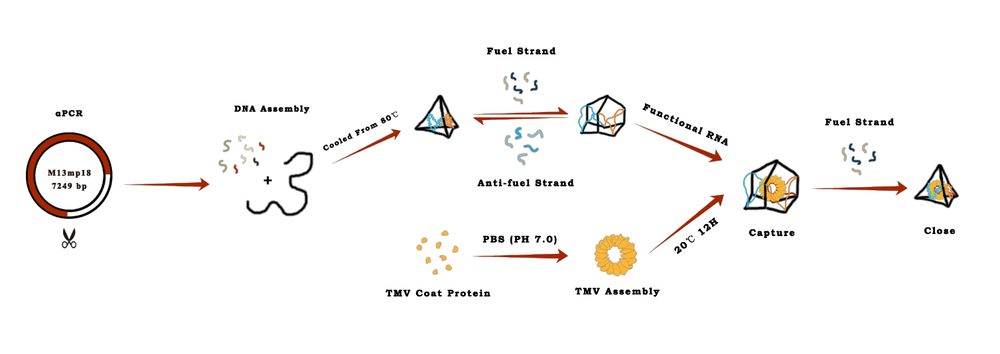
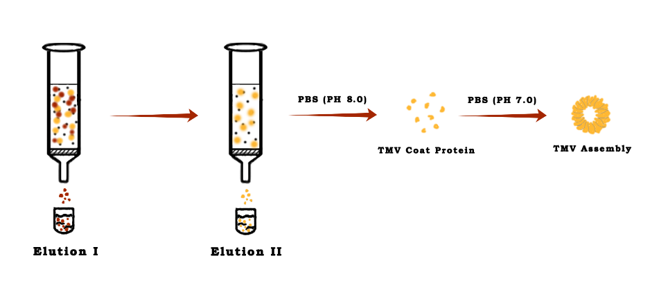

An Overall View

Generation of Scaffold
- To minimize excess ssDNA in the final structure, which may result in nonspecific object aggregation or otherwise interfere with folding, we decided to perform asymmetric PCR ( αPCR ) to generate object-specific scaffolds for folding.

- αPCR was performed with a sense primer concentration of 1 mM, an anti-sense primer concentration of 20 nM, 50 ng of M13mp18 dsDNA template, 200 mM dNTPs mixed in a final volume of 50 μl and 1 unit of Q5TM High-Fidelity DNA Polymerase（NEB）. The aPCR program used is as follows: 95°C, 4 min for the initial denaturation; followed by 35 to 40 cycles of 95°C, 30 s; 55° , 30 s; 72°C, 5min; 72℃for final extention, and hold at 4℃.
Identification and purification
- The aPCR products were run through 0.8% low-melting temperature agarose gel ( 0.2g agarose, 25ml 1× TAE), under a constant voltage of 80V. The products were extracted and purified by Gel DNA recovery kit.
Origami reaction protocol
Prepare the reaction
- All staples were diluted with ddH2O to a concentration of 500 nM. Scaffold is mixed with 10 times concentration of staple strands in 1× TAE-Mg2+. You can see the details in Table 1
| Concentration | [μl] | Final concentration | |
|---|---|---|---|
| Scaffold | 10~20 nM | 25 | 5~10 nM |
| Staple | 167~333 nM | 15 | 50~100 nM |
| 10X TAE | —— | 5 | 1× TAE |
| 10× Mg2+ buffer | 100~200 mM | 5 | 10~20 mM |
Annealing
- The temperature was lowered from 80 ℃ to 60℃ at 4min ℃-1, then from 60℃ to 24℃ at 20 min/℃-1 .
- Hold at 4℃
Structural change
Expansion
- Take 25μl Origami sample and mix with 25μl fuel strand solution, which is 15 times the concentration of the Origami products.
- Incubate at 37℃ for 30 min, then cool to 15℃ by 3℃/min.

Constriction
- Take 25μl expansion sample and mix with 25μl anti-fuel strand solution, making the fuel strand: anti-fuel strand ratio of 5:1.
- Incubate at 37℃ for 30 min, then cool to 15℃ by 3℃/min.
Purification of Origami products
- The aPCR products were run through 2% low-melting temperature agarose gel (0.5 g agarose, 25ml 1× TAE) under a constant voltage of 80V, then be extracted and purified with Gel DNA recovery kit(厂名).
AFM protocol
- Take a 5μl volume of the sample for AFM, let it be deposited onto a freshly cleaved mica and left to adsorb to the surface for 5 min. Then wash with ddH2O to remove the salt, allow it to air dry and wait for imaging.
- The DNA samples were imaged in tapping mode.
TEM protocol
- Drop 5μl of the sample solution on the grid and left to adsorb for 5 min. For staining, the grid was touched with a drop of 2% uranyl acetate solution for 1min. Let the grid dry and keep it at room temperature.
Dynamic Light Scattering
- For the measurement, 100μl sample solutions were measured at a concentration of 10 nM in 1× TAE Buffer. The sample temperature was maintained at 25℃ during measurement.
Assembly of TMV coat protein（CP）

- The TMV coat proteins purified by DEAE anion exchange chromatography were disaggregated through dialyzing in the PBS buffer (PH 8.0) at 4℃ for 48h, and for assembly of TMV disc, the disaggregated proteins were dialyzed in PBS buffer (PH 7.0) at 4℃ for more than 24h.
Capture of the TMV disc

- The assembled TMV disc were incubated with the open cage at 20℃，12h. Then the mixture was added with anti-fuel strands and incubating for another 40 min to close the cage.